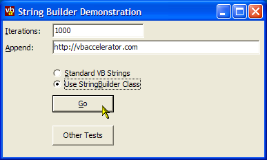

String Builder Class and Demonstration (15K)
String Builder Class and Demonstration (15K)
 Bugs: 0 / 1
Bugs: 0 / 1
 Issues: 2 / 2
Issues: 2 / 2
 Questions: 0 / 0
Questions: 0 / 0
 1 Jan 2003
1 Jan 2003
First Posted

StringBuilder Class for VB
Speed up string operations by up to 100 times or more using this class
If you need to build a string by adding lots of pieces together, VB's string handling is slow because a new string is created in memory every time a new piece is added. This article presents a class which allocates a string chunk and then uses memory copy methods to manipulate the data within the same string's memory. The result is a string class which can perform orders of magnitude quicker than the equivalent VB code.
Improving String Handling Performance in VB
VB's strings are fundamentally based on the COM BSTR object. As is the case with strings in most current programming languages, BSTRs are fixed in size once they are created. If you want to change the length of a string in any way once it has been created, for example, by adding another string to it, behind the scenes a new string with the correct length is created, the data copied into it and then the previous string is discarded. To a VB programmer, this is transparent, since you still refer to the string using the same variable name, however, this is clearly not memory efficient if you want to append a large number of strings together.
To improve matters, you can trade off increased memory allocation for performance by allocating a larger string than you need to start with, storing the actual length you are using and then manipulating the memory that is pointed to by the string. This is the method used by the class presented with this article.
Accessing String Memory
To access the memory pointed to by a string, you can use VB's StrPtr function. This returns a pointer to the buffer allocated for the string. Remember that in the COM BSTR used by VB is a Unicode string, and therefore there are two bytes for each character in the buffer. You can then copy and move bytes using the ubiquitous Win32 RtlMoveMemory API call (which is typically aliased to CopyMemory when used in VB since that's what Bruce McKinney did when he first describing it in "Hardcore Visual Basic").
The StringBuilder Class
The StringBuilder class provided with the download provides a convenient class which uses the techniques described above to allow you to append, insert, remove and find characters within a single string. When you are performing a large number of string operations, for example, appending 10,000 strings together, you can easily see a 100x increase in performance.
StringBuilder Class Properties and Methods
- Length (Get)
Returns the length of the string (note this is not the same as the size of the string the class internally stores, which is returned by the Capacity property the object). - ToString (Get)
Returns the string. - TheString (Set)
Sets the string to the specified string. - Append
Appends the specified string. The string is passed ByRef for performance (no copy is made). - AppendByVal
Appends the specified string by value. Use this when you want to append a non-string argument. - Insert
Inserts a string at the specified (1-based) index. The string is passed ByRef for performance (no copy is made). - InsertByVal
Appends the specified string by value. Use this when you want to insert a non-string argument. - Remove
Removes lLen characters from the specifed (1-based) index. - Find
Finds the specified string using VB's InStr method on the internal buffer.
There are also a few properties and methods for tuning the memory usage of the class:
- Capacity (Get)
Returns the current capacity of the StringBuilder class. - HeapMinimise
Reduces the internal string size to the smallest possible multiple of ChunkSize given its current length - ChunkSize (Get, Set)
Gets/sets the size of the chunk which is appended to the internal string whenever more capacity is needed. The default is 8192 characters, or 16k. When a StringBuilder object is instantiated, no initial string capacity is allocated. Hence if memory is a concern the ChunkSize can be set much lower prior to using the class.
The following code demonstrates how you might use the class to create a simple HTML document:
Private Function CreateHtml( _
ByVal sTitle As String, _
lstDocuments As ListBox _
) As String
Dim i As Long
Dim buf As New cStringBuilder
buf.Append("<HTML><HEAD><TITLE>")
buf.Append(sTitle)
buf.Append("</TITLE></HEAD><BODY>")
buf.Append("<H1>")
buf.Append(sTitle)
buf.Append("</H1>")
buf.Append("<TABLE><TR><TD>Document Id</TD><TD>Name</TD></TR>")
For i = 0 to lstDocuments.ListCount - 1
buf.Append("<TR><TD>")
buf.AppendByVal(lstDocuments.ItemData(i))
buf.Append("</TD><TD>")
buf.Append(lstDocuments.List(i))
buf.Append("</TD></TR>")
Next i
buf.Append("</TABLE></BODY></HTML>")
CreateHtml = buf.ToString
End Function